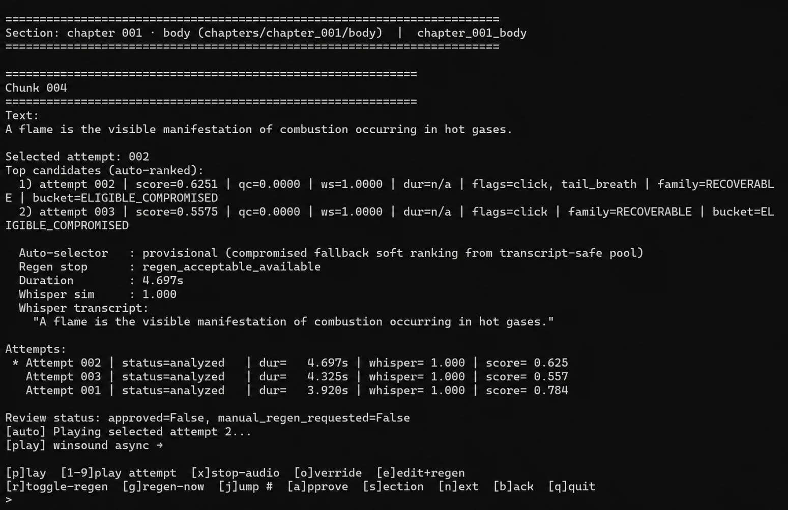
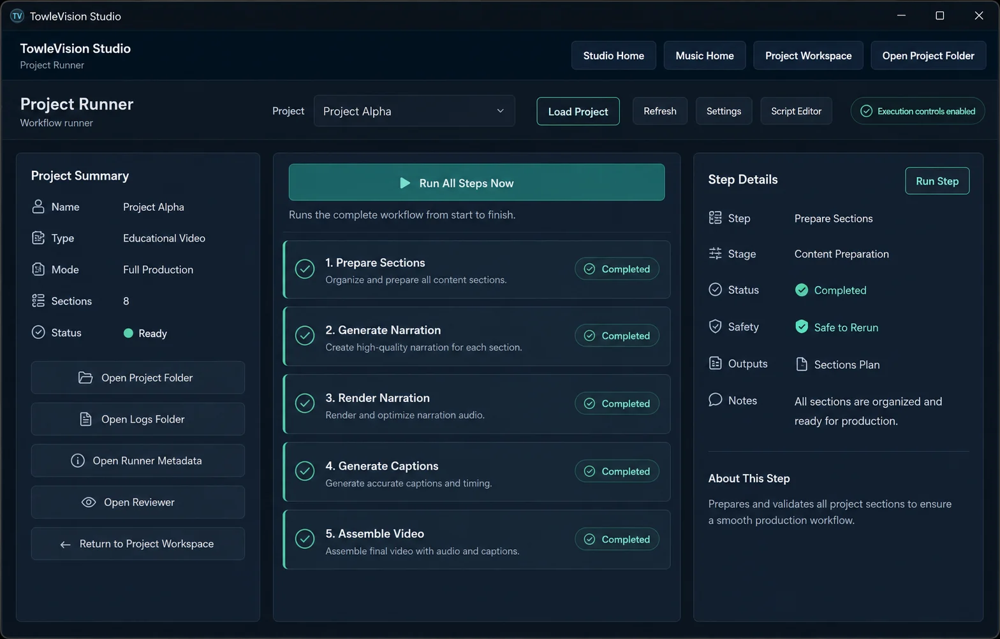
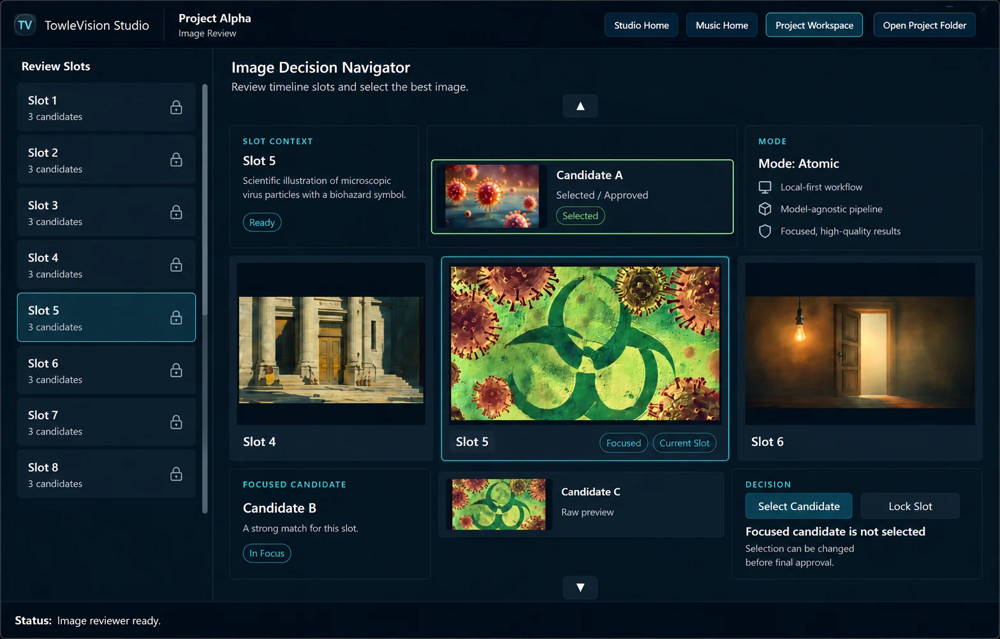
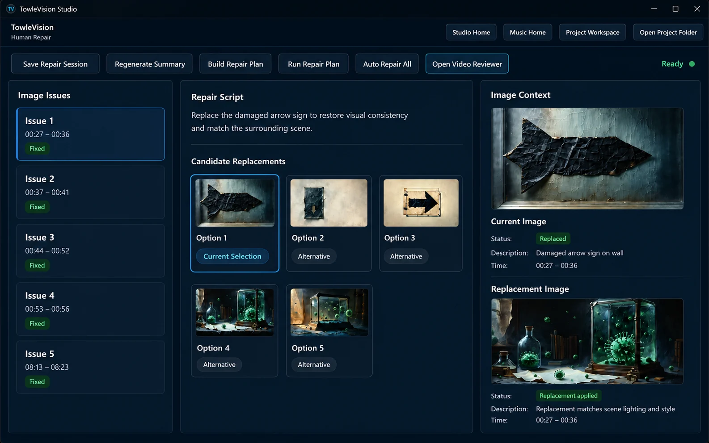
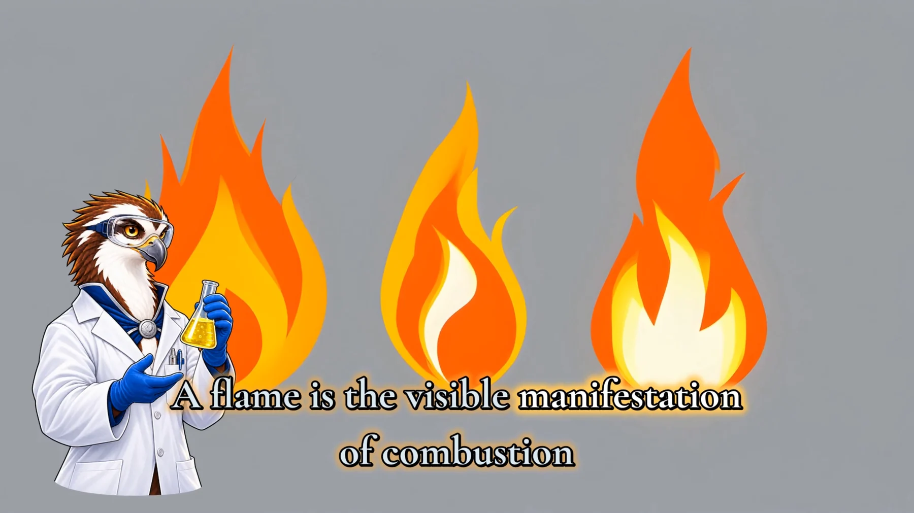
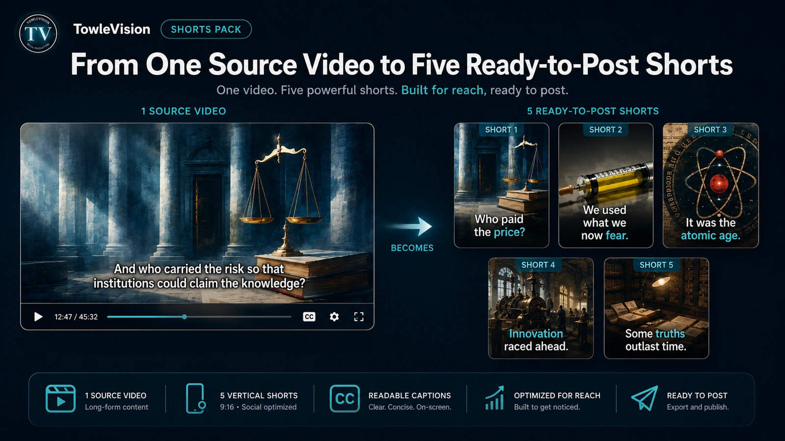

Technical proof behind TowleVision
TowleVision Engineering Portfolio
A Python-centered multimodal production platform built through sustained development,
deterministic validation, model-backed systems, heuristics, and human review.
TowleVision Studio combines conventional software, structured artifacts, AI-assisted
media systems, explicit rerun paths, and operator-facing review tools. The engineering
target is repeatable production: real source material enters the system, outputs are
inspected and repaired, and finished work becomes publishable media.
September 2026 Engineering Snapshot
September 2026 audited repository snapshot for the active TowleVision production platform.
The audit covers 702 source files, 9 workflow groups, and 9 materially distinct model-backed
systems or families.
1,174
Git commits
277 days
Reachable development history
423,667
Physical source lines
659
Tracked Python files
192
Test files
~2,823
Static test definitions / call sites
57
Canonical pipeline steps
70
Current production / review operations
Snapshot definition
These numbers are not presented as standalone measures of software quality. Together they
document the scale and sustained iteration behind a working production system that evolved
through more than 1,100 Git commits from CLI-driven tooling into an integrated multimodal
platform.
The static test count is an audited identification of test definitions and call sites; it
is not a claim that every counted item was executed during the audit. The pipeline count
preserves the distinction between 57 canonical pipeline steps and 70 registered, current
production and review operations.
What the Platform Demonstrates
The outputs matter because they are visible proof of the underlying system. The deeper
engineering work is coordinating dependent media stages while preserving source text,
workflow state, review decisions, repair paths, and repeatable operator control.
Python-centered systems design
A modular backend organizes source material, generated artifacts, workflow registration,
validation, media assembly, and review-oriented state.
Applied model orchestration
Model-backed capabilities are coordinated with conventional software instead of being
treated as a complete end-to-end replacement for production judgment.
Automation with product intent
CLI and browser/operator workflows are designed around setup, execution, review,
repair, and deliberate reruns.
Python Automation
Applied AI
Workflow Systems
Internal Platforms
Scientific Software
Pharma-Adjacent Engineering
AI Is One Component of the System
TowleVision Studio does not frame AI as a one-shot video generator. The system is built from
cooperating layers that separate generation, validation, state, heuristics, and human judgment.
AI / model-backed systems
- TTS candidate generation
- ASR and caption alignment assistance
- Planning and prompt support
- Image generation
- Image and VLM review or judging where applicable
Deterministic software
- Project contracts and artifact state management
- Source-text preservation
- Validation and workflow registration
- Explicit rerun paths
- Production and review operation boundaries
Heuristics
- Pacing and timing allocation
- Ranking and scoring support
- Motion and layout decisions where applicable
- Format-aware presentation choices
Human judgment
- Review, selection, and correction
- Regeneration and repair decisions
- Caption, image, audio, and video acceptance
- Final production approval
CLI First. GUI Where the GUI Saves Human Time.
TowleVision Studio grew from CLI and registry-driven operations. Those remain important
because they make stages explicit and rerunnable, while browser/operator tools reduce the
human cost of setup, execution, review, repair, and project navigation.

CLI-driven operations
The CLI makes project operations explicit, traceable, and rerunnable across the pipeline.

Browser/operator tooling
Interfaces provide project setup, execution, review, and repair views where visual
context helps humans make faster decisions.
Human-in-the-Loop Review and Repair
Candidate generation is not the same as approval. TowleVision Studio treats generated
media as reviewable production material: outputs can be compared, selections can be locked,
weak assets can be regenerated, and downstream stages can be rerun deliberately.

Image Reviewer
Generated candidates can be reviewed and selected instead of automatically becoming
approved production assets.

Human Repair
Captions, audio, images, and video output can be corrected or regenerated through
controlled repair paths before final acceptance.
Review before acceptance
Produced artifacts can be inspected before they are treated as final deliverables.
Deliberate regeneration
Weak or failed assets can be regenerated around a human review decision.
Rerunnable downstream work
Repairing an upstream asset can be followed by intentional downstream reruns.
Persistent Characters as Production Entities
TowleVision recurring characters are reusable production entities rather than one-off
generated pictures. Character configuration can connect identity, voice routing,
presentation and visual style, compositing, and speaker-aware downstream behavior.
Miles
Industrial & Practical Chemistry
The Engineering Ends in Actual Production
Chemistry TV is an ongoing TowleVision-produced educational series. It combines recurring
characters, multiple speakers and persistent voices, specialized terminology, authoritative
captions, generated visual material, structured planning, human review, and final video assembly.

Current production proof
The SOAP episode demonstrates the system working on real educational material with
technical language such as hydrophilic and hydrophobic. The engineering goal is not
merely to generate media, but to preserve approved wording, coordinate voices and
visuals, align captions, and leave room for human review.
Selected Projects
The current engineering story centers on TowleVision Studio and Chemistry TV. Older
productions remain useful as representative milestones, but they are no longer the primary
proof of the platform.
Current platform showcase

Chemistry TV
Ongoing educational science series
Current TowleVision production proof: recurring characters, persistent voices,
technical terminology, aligned captions, generated visuals, structured planning,
review, repair, and final video assembly working together across episodes.
Earlier long-form milestone

The Snow Queen
Long-form execution - Semifinalist recognition
An earlier long-form milestone demonstrating end-to-end execution across narration,
captioning, story planning, image generation, pacing, and final assembly, with external
semifinalist recognition.
Older representative outputs

Educational and Format Work
Literary summaries and source-to-shorts adaptation
Lord of the Flies, Beowulf, and source-to-shorts work remain examples of applying
narration, captions, visual pacing, and format-aware delivery to different source
materials.